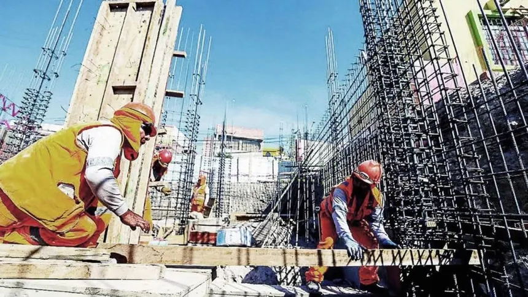

Reactivacion de obras publica en la ciudad

Argentina anunció la reactivación de obras públicas consideradas prioritarias, con una inversión estimada de US$ 6.600 millones. Estas obras buscan mejorar la infraestructura urbana y generar empleo en distintas regiones del país.
El plan incluye la construcción de rutas, mejoras en el transporte y proyectos de urbanización. Según fuentes oficiales, la iniciativa también apunta a impulsar la economía local y mejorar la calidad de vida de los ciudadanos.
Se espera que en los próximos meses comiencen a verse los primeros avances en las principales ciudades del país.
Leer noticia completa